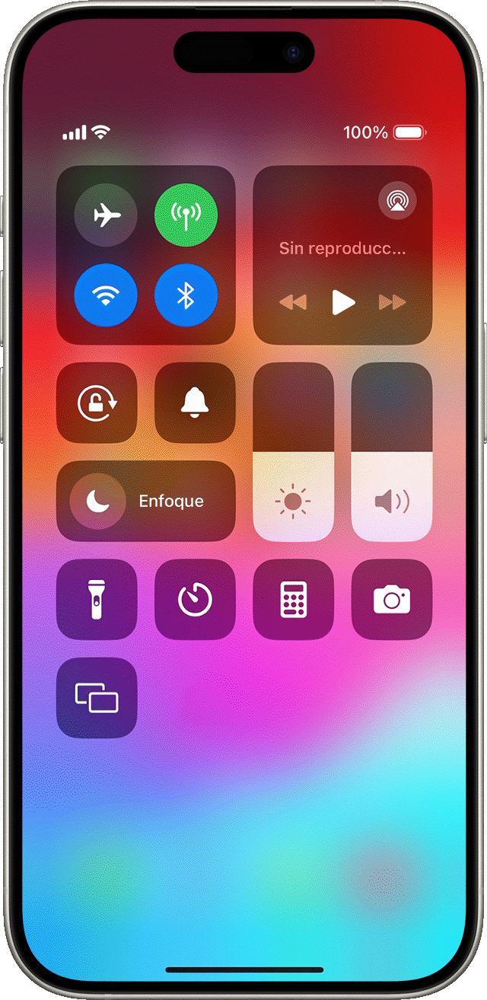

SUGERENCIAS

Se recomienda tomar descansos regulares para evitar la fatiga visual y ajustar el brillo de la pantalla. Mantener una postura adecuada y hacer ejercicios de estiramiento puede prevenir dolores musculares.
Establecer límites de tiempo para el uso de dispositivos puede ayudar a evitar la dependencia tecnológica.